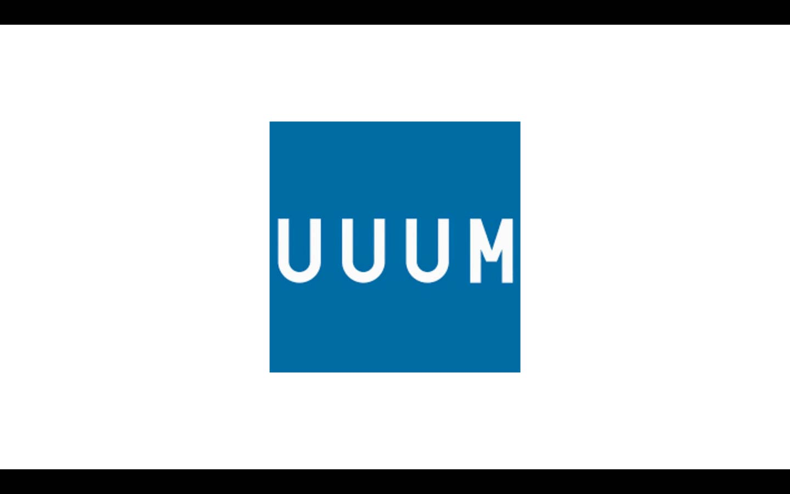

study
スタートアップ演習
4/11 ベーシックインカムが実現した世界で何をしますか？
4/18 お金にまつわる気になるサービスを調べる
4/25 気になるビジネスモデルを見つける
5/16 ビジネスモデル図鑑以外で気になるビジネスを調べる
5/30 前回選んだ会社のビジネスモデルの図解

 6/20 KUADの良い所、悪い所,�学校への要求をまとめる
キャッシュレスの良い所、悪い所
6/27 チャットボットで売れそうな物、サービスを考える
7/4 選んだテーマでチャット（LINE）を使った販売の流れとスクリプト（会話の流れ、台本）を考える
6/20 KUADの良い所、悪い所,�学校への要求をまとめる
キャッシュレスの良い所、悪い所
6/27 チャットボットで売れそうな物、サービスを考える
7/4 選んだテーマでチャット（LINE）を使った販売の流れとスクリプト（会話の流れ、台本）を考える